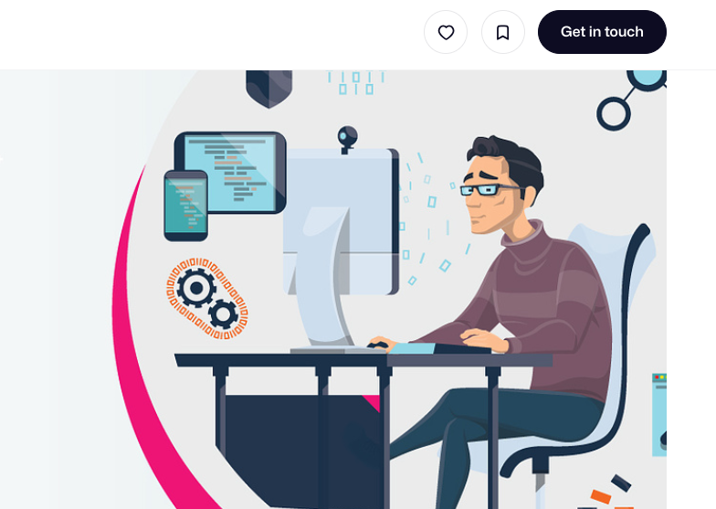

Web development is a critical part of bringing business ideas to life. Web development has become incredibly important in today's digital world, impacting individuals, businesses, and society as a whole.
Web development builds the websites and web applications we use daily for news, education, entertainment, shopping, banking, and countless other needs. It provides a platform for individuals to connect, share information, and access essential services.
Web development builds the websites and web applications we use daily for news, education, entertainment, shopping, banking, and countless other needs. It provides a platform for individuals to connect, share information, and access essential services.
Have a plan: Without a plan, there's no way you can know where to start with your website. Having a plan will make building your website go much more smoothly so you can have an end result you're proud of.
While the field of web development includes many concepts and technologies you should be familiar with, the three main pillars you should begin with are HTML, CSS, and JavaScript. Start strong with these fundamentals and everything else will become much easier to understand.
There are a lot of benefits to having a web developer for your business. The web developer helps in customizing the website accordingly. They help in designing and developing the website content, making it look attractive at the same time. A web developer can optimize the performance of the website and boost its performance.:
Modern web applications are data-driven, where IT operations and development are tightly integrated with data analytics to improve product quality and user experience.
Access to Information and Services: Web development builds the websites and web applications we use daily for news, education, entertainment, shopping, banking, and countless other needs. It provides a platform for individuals to connect, share information, and access essential services. Personal Branding and Expression: With personal websites and blogs, individuals can showcase their skills, expertise, and creativity, building an online presence and personal brand. It empowers individuals to express themselves and connect with communities around shared interests. Entrepreneurship and E-commerce: Web development tools enable individuals to build online stores, marketplaces, and other businesses, reaching a global audience and generating income without geographical limitations. It fosters entrepreneurship and opens doors to new economic opportunities.
Online Presence and Brand Building: Businesses need a website to establish an online presence, build brand awareness, and connect with potential customers. Web development allows businesses to control their online narrative, showcase their products and services, and build trust with their audience. Increased Sales and Customer Engagement: Well-developed websites and applications can attract more customers, convert leads into sales, and improve customer engagement. Web development offers tools for marketing, communication, and sales automation, ultimately boosting business growth. Cost-Effectiveness and Global Reach: Compared to traditional advertising, a website offers a cost-effective way to reach a global audience 24/7. Web development empowers businesses to expand their reach, reduce marketing costs, and tap into new markets. .
Information Sharing and Collaboration: Web development facilitates the sharing of information and collaborative efforts on a global scale. It helps connect researchers, activists, and individuals across borders, driving progress in various fields. Education and Knowledge Access: Educational resources, online courses, and open-source materials are all products of web development. It democratizes access to knowledge and educational opportunities, fostering learning and innovation. Economic Development and Job Creation: The web development industry itself is a source of jobs and economic growth. Moreover, well-developed websites and applications can boost other sectors by facilitating communication, transactions, and innovation. In conclusion, web development is not just about building websites; it's about creating the infrastructure for a connected, informed, and empowered world.
web development is an excellent choice for a career.Since the field is always buzzing with fierce technologies and there is always a technological shift in the market to adapt to, the demand for skilled web developers is unending.
The browser goes to the DNS server, and finds the real address of the server that the website lives on (you find the address of the shop). The browser sends an HTTP request message to the server, asking it to send a copy of the website to the client (you go to the shop and order your goods).
Front-End Web Development. Today where everything is digitized, a good user experience is kept on the pedestal.
Bano Qabil is the Largest IT scholarship Program for the Youth of Karachi,thank you very much Alkhidmat that you started this kind of advanced IT courses and IT, training series. :
Traditional education has changed radically within the last couple of years. We will also continue to take this trend forward by learning from here.